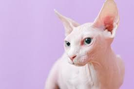

info menarik
Anak Sehat
Untuk Anak
Untuk Orang tua
info menarik
Anak Sehat
Untuk Anak
Untuk Orang tua

Kucing
Kucing sphynx

Nama itu diambil dari patung spnx di mesir, kalau dilihat sih kucingnya gak ada bulu, tapi kalau teliti ada bulu halus di kaki, telinga dan beberapa bagian lain, kucing ini berasal dari kanada,
tapi kucing ini juga ada di meksiko, moroko, prancis, dan lain lain. karena kucing ini di impor ke indonesia, jadi di indonesia HARGA KUCING INI SAMPAI 25 JUTA RUPIAH LOH ! Padahal menurutku kucing ini gak lebih lucu
dari kucing lain.
Kucing ini akan mengalami diare selama berminggu-minggu jika diberi obat bius dan obat-obatan lain, serta makanan yang mengandung kadar protein kurang dari 80 persen. kucing ini juga akan diare kalau berpindah
rumah atau diadopsi oleh pemilik baru, kayak alergi gitu deh.
Bagaimana asal usul kucing ini?
pada tahun 1960, kucing dari kanada yang bulunya pendek melahirkan anak anak tanpa bulu, lalu mereka membuat program mengembangbiakkan kucing tanpa bulu.
pada tahun 1970, Cat Fanciers Association (CFA) memberi status bahwa kucing ini adalah ras kucing baru bernama canadian hairless.
tapi tugggu...
pada tahun 1971, CFA menariik kembali keputusan nya, karena masalah kesahatan, pada akhirnya canadian hairless menjadi punah